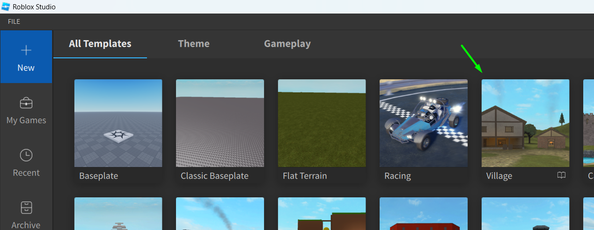
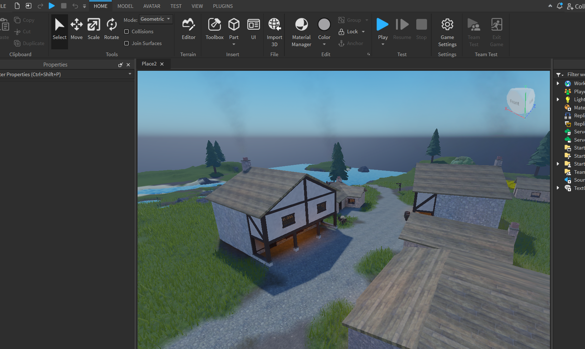
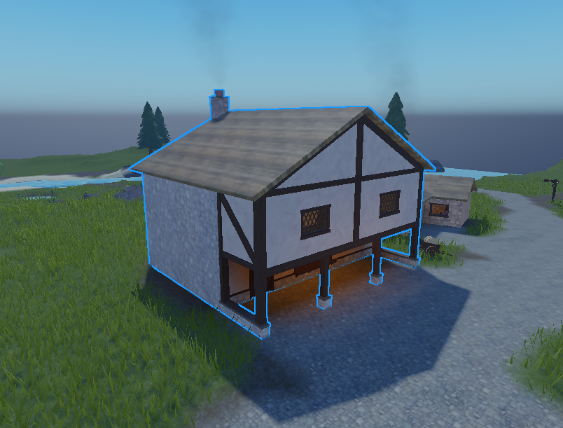
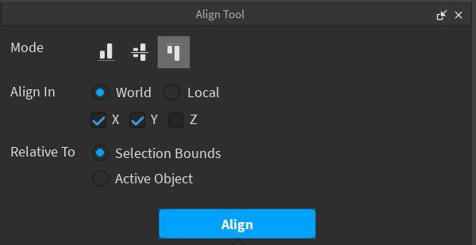
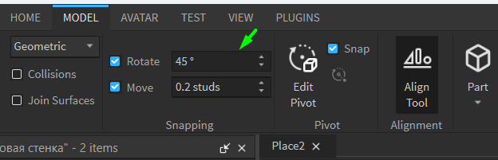

Создание игр в Roblox Studio
Моделирование 3D-объектов
Сегодня мы начинаем второй модуль разработки игр в Roblox Studio. Он посвящен трехмерному моделированию, в нём мы будем применять навыки, полученные в предыдущем модуле, для создания сложных составных объектов.


Для ближайших занятий нам необходимо создать новый проект из пресета Village.
В этом проекте заранее создана локация с небольшой деревней, рекой и полями. Цель этого занятия - попрактиковаться в работе с базовыми приемами трехмерного моделирования и собрать копию одного из таких домов из примитивов - деталей, которые по умолчанию присутствуют в Roblox Studio.
Задачи трехмерного моделирования. Роль 3D-художника
Трехмерное моделирование - это одна из самых заметных частей игровой индустрии. Все, что вы можете увидеть и «пощупать» внутри игры, создано 3D-художниками. Это очень широкая область игровой индустрии, которая включает в себя все: от второстепенных объектов на сцене (бочки, светильники, коробки) до создания персонажей, зданий, автомобилей, оружия и т.д.
Вне игр моделирование встречается тоже повсеместно - любая вешь, которую сделали на заводе, изначально была 3D-моделью, реклама, кино и даже медицина сейчас используют 3D-графику в решении множества задач.
В этом модуле мы «поработаем» в роли рядового 3D-художника и смоделируем новый дом для деревни.
Принципы моделирования объектов в Roblox Studio
Моделирование в Roblox Studio в большинстве своем строится на использовании 4 базовых деталей (примитивов): куб, цилиндр, сфера, рампа, и комбинировании их в разных вариациях для получения более сложных форм. Основным навыком для моделлера в Roblox является умение разбивать сложные формы на эти 4 примитива.
Практика! Моделируем дом!
Выберем один из домов в качестве примера. Поэтапно создаем модель. Проще всего дома строить в следующей последовательности:
- Основные стены
- Пол
- Дополнительные стены (например, балкон)
- Чердак
- Крыша
- Декоративные элементы
При работе с элементами нам пригодятся горячие клавиши:
- Ctrl+1 - Выделение объекта
- Ctrl+2 - Перемещение объекта
- Ctrl+3 - Изменение размера объекта
- Ctrl+4 - Вращение объекта
Создание первого этажа. Инструмент Align Tool
Этапы:
- Создаем первую боковую стену, настраиваем её размер, материал и цвет. После настройки продублируем её (Ctrl+D) и перенесем напротив.
- После боковых стен, продублируем одну из них, повернем на 90 градусов, растянем её, и выставим так, чтобы она стала задней стороной здания.
- Сдублируем третью стену и переместим ее по всем трем осям в сторону от дома. Активируем Align Tool, его можно найти справа от параметров шага. Откроется новое окно с параметрами выравнивания: 
- Mode указывает, как именно будут выравниваться объекты - по минимальному, среднему или максимальному значению.
- Align In изменяет ось, по которой будет осуществлено выравнивание. Можно выбрать сразу несколько. По умолчанию используются мировые оси.
- Relative То изменяет режим выравнивания. Selection Bounds будет быравнивать оба объекта относительно друг друга, Active Object будет выравнивать один объект относительно другого, активного. Последний можно отличить по оранжевой рамке.
- Выберем четвертую стену и одну из боковых стен. Определим, по какой из осей мы будем выравнивать объекты и какой из режимов нам нужен.
- Выровняем стену по всем осям.
- Добавим ещё одну деталь и сделаем из неё пол. Настроим для нее материалы и цвет, выровняем при помощи Align Tool по высоте и растянем по размерам стен.
- Сдублируем переднюю стену, сделаем ее меньше снизу и создадим из нее переднюю стену второго этажа.
- Сдублируем эту стену, повернем ее на 90 градусов и измените ее так, чтобы она стала боковой стеной второго этажа.
- Выровняем при помощи Align Tool Сдублируем получившуюся боковую стену и перенесем на противоположную сторону.
- Из боковых стен второго этажа сделайте нижние боковые опоры для колонн.
- Первый шаг - сделать передние и задние стены чердака.
- Выберем Wedge и изменим самое большое значение его параметра Size на полученную величину.
- Выровняем Wedge над передней стеной, сдублируем и развернем его в противположную сторону, чтобы получить моделируемую форму.
- Сдублируем полученные парты и перенесите их на заднюю стену.
При настройке элементов может не хватать плавности изменения размеров и положения. Чтобы изменить шаг, перейдем на вкладку Model и уменьшим параметр Move.
Четвертую стену необходимо сделать при помощи инструмента Align Tool - он позволяет выравнивать объекты относительно друг друга.
При изменении параметров, Roblox Studio будет показывать желтой плоскостью предпросмотр операции с выбранными настройками.
Коробка дома готова, теперь нужно перейти к стенам второго этажа.
Стены второго этажа
Используем следующий порядок работы:
На этом основная часть стен закончена.
Создание крыши дома - создаем стены чердака
Используем следующий порядок:
Начнем с построения передней стены. Эта стена делается при помощи элемента Wedge, который должен быть вдвое меньше в длину, чем передняя стена. Создайте эту деталь и вместо изменения размеров вручную, выберите стену и найдите ее параметр Size.
Очевидно, длина будет самым большим значением. Поделите ее на 2 и это будет искомой длиной детали Wedge.